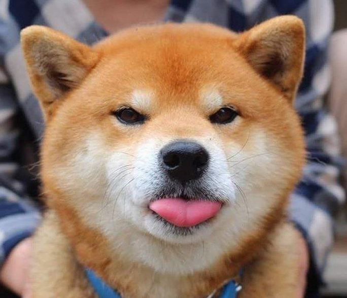
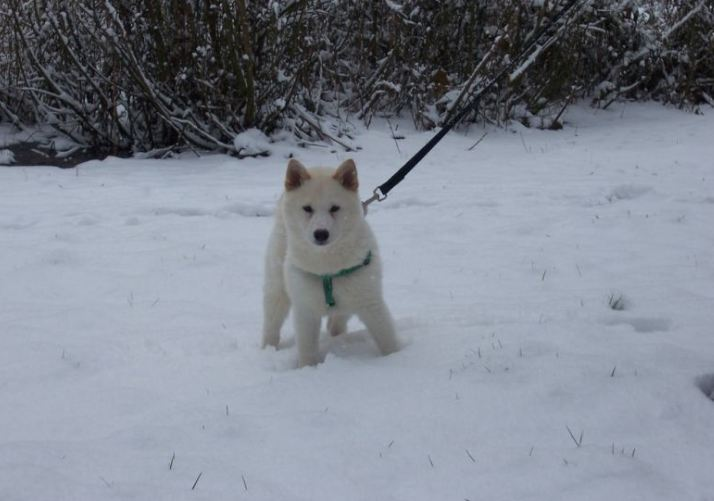

Top 6 giống chó Nhật Bản được xem là Quốc Khuyển của đất nước Mặt trời mọc
Phần lớn các giống chó tại Nhật đều có hình dáng và kích thước khá giống nhau tuy nhiên mỗi giống chó lại có đặc điểm và tính cách khác nhau thú vị.1.Chó Akita
Có lẽ không cần phải giới thiệu nhiều về thiên thần của Nhật Bản Akita. Giống chó này được mệnh danh trung thành và là một trong nhiều giống chó đẹp tại đây.
Không ai lạ gì cái tên Hachiko, chú chó trung thành đã từng lấy đi bao nước mắt của người xem. Sự nổi tiếng của Akita còn được xuất hiện trong nhiều tác phẩm nghệ thuật, phim ảnh trên khắp thế giới.

Nếu bạn muốn tìm hiểu thêm về Akita thì không nên bỏ qua bài viết này của Blog yêu chó mèo…
2. Chó Shiba
Cũng nổi tiếng không kém Akita, Shiba cũng được nhiều người biết tới vì sự trung thành của mình. Chúng có đặc điểm bên ngoài giống với Akita nên nhiều người thường nhầm lẫn 2 giống chó này.
Điểm khác biệt của 2 giống chó này chính là Shiba nhỏ hơn, chúng chỉ là phiên bản thu nhỏ của Akita khi chỉ nặng có 15kg và cao hơn 38cm. Chúng thân thiện hòa đồng và trung thành với chủ nhân.

Màu lông của Shiba thường có màu vàng, đỏ, nâu đen…Điểm làm nên sự khác biệt của Shiba chính là khuôn mặt tươi roi rói. Lúc nào trên khuôn mặt của giống chó này cũng xuất hiện nụ cười tươi. Thậm chí cộng đồng mạng còn đặt tên cho Shiba:” Shiba hành phúc”
hay ” giống chó hạnh phúc”.
3.Chó Hokkaido tên gọi khác Ainu
Có lẽ không nhiều bạn biết về giống chó này. Hokkaido được xem là một giống chó đặc trưng của vùng xứ lạnh này. Chúng to lớn với chiều cao xấp xỉ Akita và cân nặng lên tới 30 – 35 kg.

Lông của giống chó này dày và cực kỳ thông minh. Trước đây giống chó này được bộ tộc Ainu thuần hóa để làm chó săn, chúng thông minh và sẵn sàng xả thân để bảo vệ chủ nhân của mình.